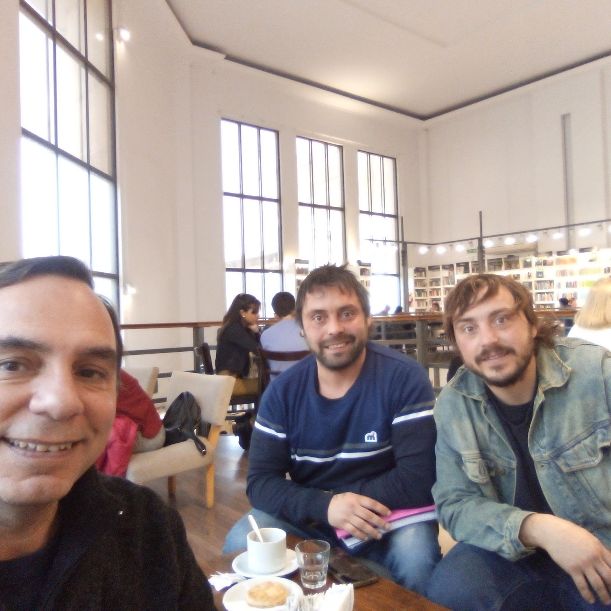
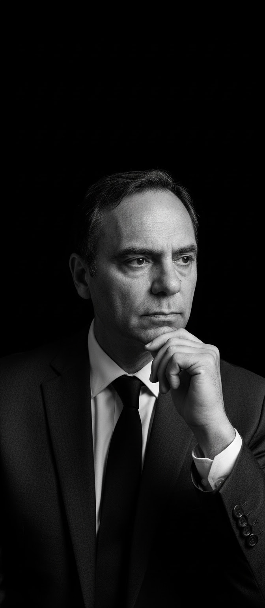
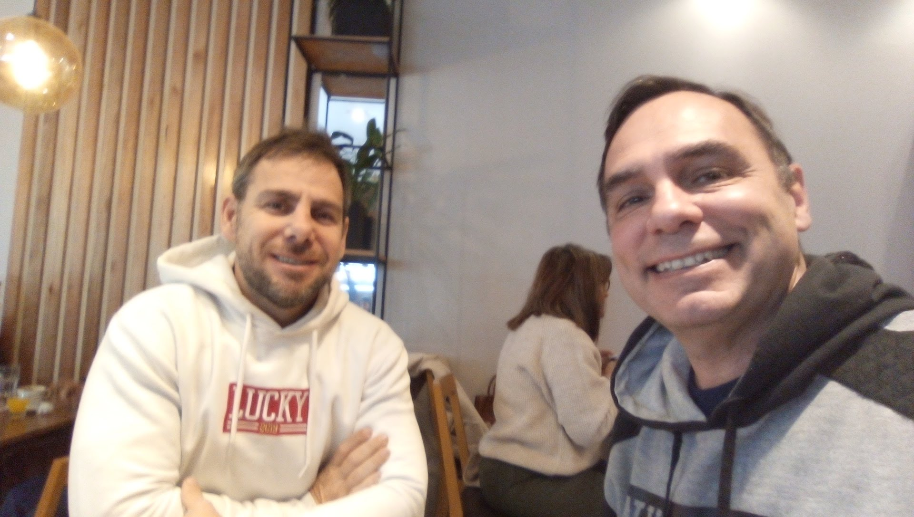
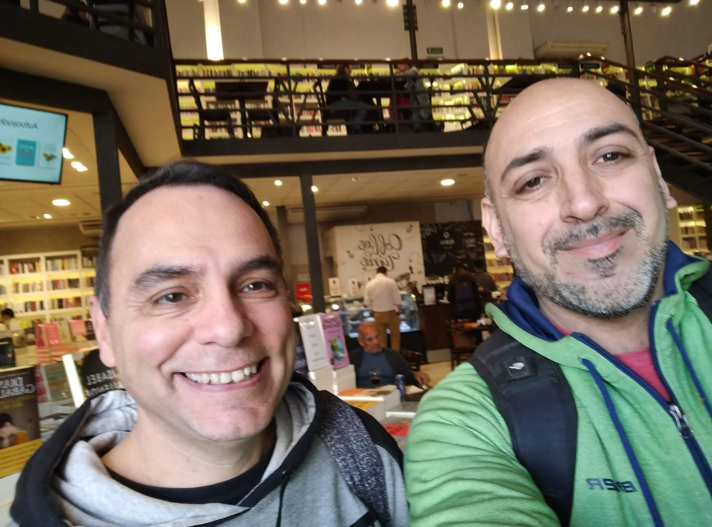
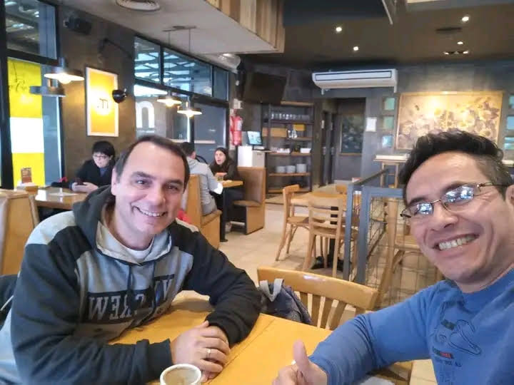
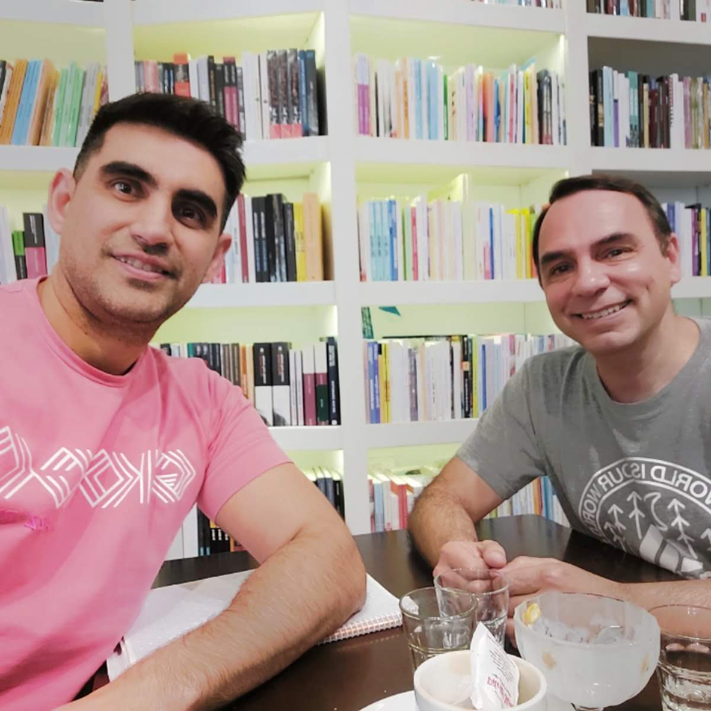
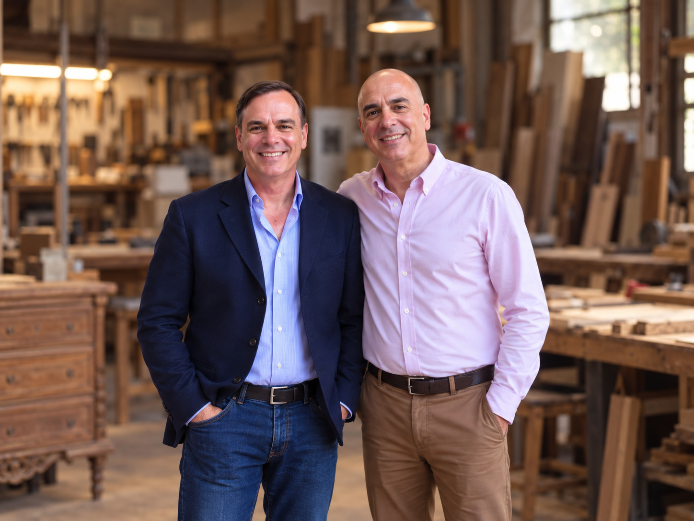
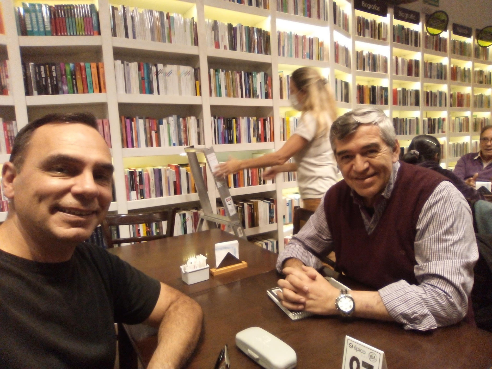
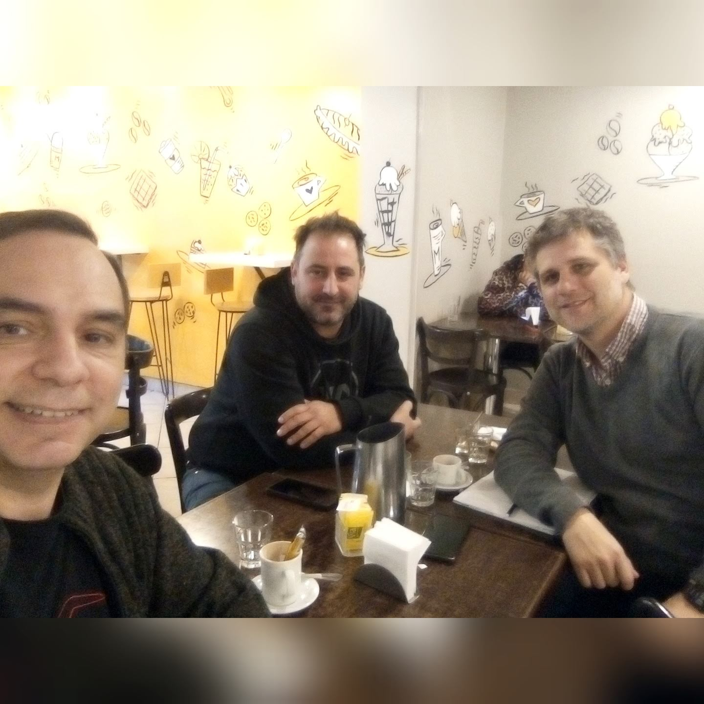

Resto EL CAIQUEN
Benjamín y Alejandro
Procesos integrales de caja, inventario y coordinación del personal en gastronomía.

Estatus, traición y procesosNo arreglo empresas. Primero descubro qué las está rompiendo. Observo aquello que una organización no siempre consigue ver de sí misma.

Una empresa puede parecer que funciona mientras sus problemas se acumulan por debajo de la superficie.
Detrás de cada empresa hay otra empresa que no siempre aparece en los balances, en las reuniones ni en los informes.
Una empresa puede vender y perder dinero. Puede tener empleados y carecer de equipo. Puede registrar cada movimiento y no saber qué está pasando.
Lo que se ve no siempre es lo que sucede.
El barro de la realidad, el café de las conversaciones y el control de lo que sucede.
Un espacio para pensar los negocios desde sus contradicciones, sus personas y sus historias.
Porque detrás de cada empresa hay mucho más que números y procesos.
Antes de corregir, hay que observar. Antes de decidir, hay que comprender.
Una empresa no siempre tiene el problema que cree tener. Por eso, mi trabajo comienza distinguiendo entre lo que se ve, lo que se cuenta, lo que se supone y lo que realmente puede comprobarse.
Diagnosticar no es adivinar. Es aprender a mirar.
Una vez identificado el problema, comienza el trabajo de intervención.
No se trata de aplicar soluciones genéricas, sino de actuar sobre aquello que realmente necesita ser corregido.
Ordenar, controlar y transformar. Sin automatizar el caos.
La mirada se demuestra en la práctica. Algunas de las numerosas intervenciones operativas y estratégicas llevadas a cabo en la región. Cada empresa tiene su propia realidad. Mi trabajo consiste en comprenderla y desarrollar soluciones acordes con sus necesidades.

Procesos integrales de caja, inventario y coordinación del personal en gastronomía.

Automatización de procesos administrativos y trazabilidad del control operativo interno.

Optimización de la logística de fabricación y reestructuración comercial y de atención al cliente.

Integración de stock multicanal y auditoría detallada de costos fijos y variables.

Reservas online y control automatizado de membresías recurrentes.

Renovaciones Artesanales Premium para devolver toda la belleza a tus tesoros.

Control analítico de presupuestos y sistematización del rendimiento en obras civiles.

Sistematización comercial y automatización de reservas de alquiler temporario.
Una red de negocios, profesionales y relaciones que se construyen en el tiempo. Marcas y profesionales independientes que forman parte de nuestro ecosistema de vinculación comercial y consultoría.
Analista de Sistemas · Consultor · Coach de Negocios
Desde 1997 acompaño a emprendedores y pequeñas y medianas empresas de la región en sus procesos de organización, gestión y desarrollo.
Mi formación como Analista de Sistemas me permite comprender las empresas como sistemas en los que interactúan personas, procesos, información y decisiones.
Como consultor y coach de negocios, trabajo junto a empresarios y equipos para identificar problemas, ordenar procesos, mejorar la gestión y desarrollar capacidades para conducir sus organizaciones.
Mi formación incluye el Programa de Estrategia y Gestión Empresarial de Florida International University (FIU), el Modelo de Negociación de Harvard y métodos de resolución alternativa de conflictos.
Mi trabajo combina el pensamiento sistémico, la mirada empresarial y la experiencia concreta en el terreno.
Una sesión para examinar una situación concreta de tu empresa, ordenar el problema y determinar qué necesita ser observado con mayor profundidad.
La Primera Mirada no es una auditoría integral ni una llamada comercial gratuita. Es un espacio de trabajo para comprender un problema y establecer posibles próximos pasos.
Solicitar mi Primera MiradaLa Primera Mirada permite comprender un problema y determinar qué necesita ser examinado.
Si la situación requiere una intervención más profunda, definimos juntos los próximos pasos.
Cada empresa tiene su propia realidad. Por eso, el alcance, la metodología y las condiciones de trabajo se establecen según las necesidades detectadas.
Primero comprender. Después, intervenir.